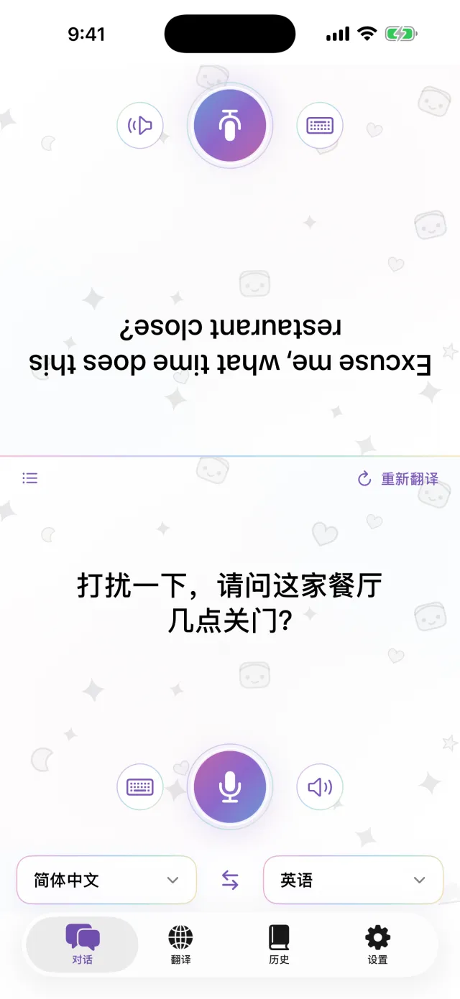
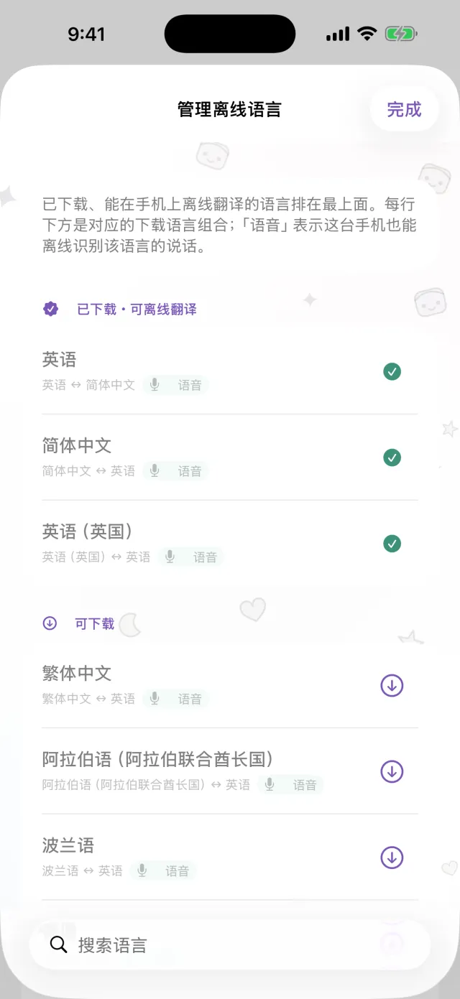
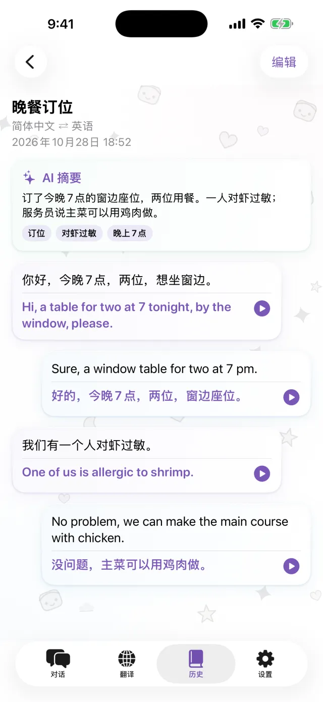
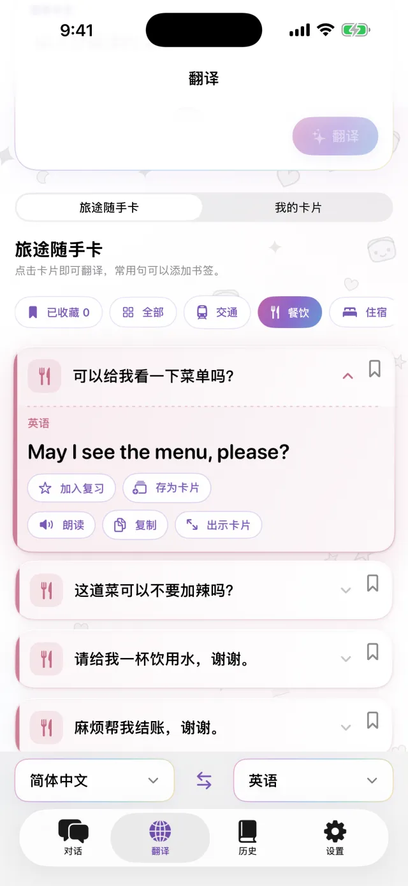
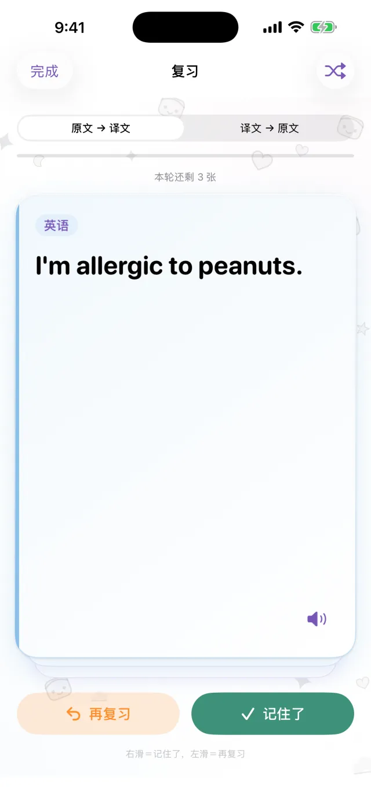

iPhone 翻译 App
iPhone 翻译 App
把 iPhone 放在中间，
这样就行。
点一下麦克风，说出你想说的话。译文会显示在屏幕另一半，朝向对方。对方回答时，用法也一样。先下载好语言，没有网络也能用。
在 App Store 下载- 约 20 种语言
- 下载后可离线使用
- 无需注册

打字
不方便出声时，打字就行
在安静的地方，或者对方说得太快时，可以直接打字。译文可以放大到整个屏幕，举起来给对方看。
- 可以复制，也可以朗读
- 一键对调两种语言
翻译键盘
先用母语写清楚，再换成更好的表达
用外语回复，难的是把真正的意思说对。使用翻译魔芋键盘，你可以先用自己的语言，按平时说话的方式写下这句话。切换到键盘，译文已经准备好了，下面还有 AI 写的三种说法：口语、礼貌、简短。选一句合适的，点一下就能填入。看不懂对方的消息时，先复制，再切换过来，就能看到意思，还有几句用对方语言写好的回复。
- LINE、WhatsApp、邮件等任何 App 都能用
- 翻译在 iPhone 上完成，键盘不会保存你输入的内容
- 点“撤销”就能换回原来的文字
离线
没有网络，也能翻译
翻译、语音识别和朗读都在 iPhone 上完成。出发前先下载需要的语言，在飞机上、还没买 SIM 卡时也能用。默认情况下，你说的话不会发送到任何地方，也不会保存录音。

Pro
每段对话，自动整理成摘要
对话结束后，“历史”里会显示简短的标题、摘要和关键词。之后想找“在大阪订晚餐”那次对话，不用一句句往上翻。摘要由 iPhone 上的 Apple Intelligence 生成，不会上传。对话太短时不生成摘要，避免写出没人说过的内容。
- 可以删除整段对话，也可以只删除其中一句

常用句卡片
每次都要说的话，存成卡片
酒店地址、食物过敏、要找的车站。存成卡片，就不用每次重新输入。点一下卡片，就会翻译成对方的语言。还内置了交通、用餐、住宿、购物的“旅途随手卡”。

Pro
存下来的句子，到期再复习
点句子上的星标，就会存入复习。记住了，会在 1、3、7、14、30 天后再次出现；没记住，当天会再出现一次。可以看原文回想译文，也可以反过来。这部分是 Pro 功能。

这些时候用得上
- 在小餐馆点菜
- 把地址告诉出租车司机
- 在药店说明过敏情况
- 把行李寄存在酒店前台
- 问路
30 秒了解
视频中已开启飞行模式。
基本信息
| 语言 | 约 20 种（Apple 支持在设备上翻译的语言） |
|---|---|
| 离线 | 支持，下载语言后即可使用 |
| 语音输入 | 支持。首次使用时，需通过 Wi‑Fi 下载语音模型（150–400 MB） |
| AI 摘要 | 支持 Apple Intelligence 的 iPhone |
| 翻译键盘 | 任何 App 都能用。AI 备选说法需要 Apple Intelligence，或你自己的 AI 密钥 |
| 账号 | 不需要 |
| 价格 | 免费。Pro 需另外付费（见下方） |
| 系统要求 | iPhone，iOS 18 或更高版本 |
- 首次使用时需要联网，用来下载语言。
- 价格会在 App Store 中以当地货币显示。
免费版与 Pro
免费
- 面对面对话
- 打字翻译、全屏出示
- 翻译键盘与 AI 备选说法
- 离线翻译
- 旅途随手卡，以及 3 张自建卡片
- 带有小横幅广告（观看一段短视频，15 分钟内不显示广告）
Pro
- 每段对话的 AI 摘要
- 完整的翻译历史
- 不限数量的卡片与到期复习
- 无广告
可选按周、按月订阅，或一次买断。